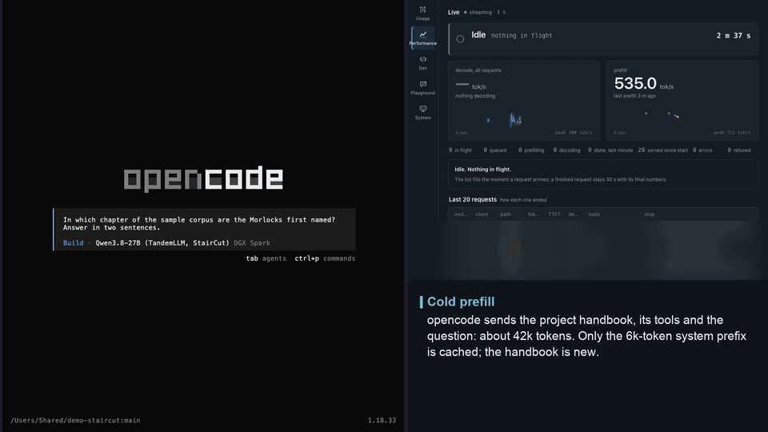
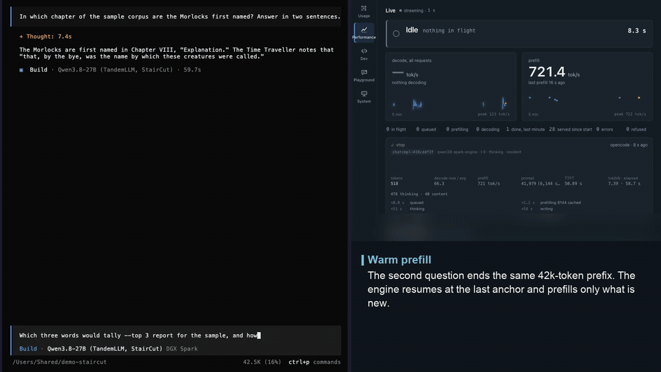

Caches¶
A long prose prompt sent twice took 44.4, 93.7 and 208.3 s to its first token at 32k, 64k and 128k tokens from cold, and 0.3, 0.6 and 1.1 s the second time, resumed from the resident prefix (the paper, one request each, published NVFP4 set). A prefill is the most expensive thing the engine does, and the caches exist so that it runs once per token of a conversation instead of once per turn.
Every cache here restores exact state, and none of them is meant to change the output. exactness.md says precisely what "exact" means for each, and what has been measured.
What a state is¶
To continue a sequence at token L, the engine needs:
- the KV rows of the 16 attention layers for tokens 0 to L (64 KB a token);
- the 48 recurrent states and their convolution tails (about 147 MiB, whatever L is);
- the drafters' own position-indexed KV (about 40 KB a token for both drafters).
The recurrent part is the hard one. A KV row depends only on the tokens up to it, so rows written for an earlier request stay valid. The recurrent state has absorbed every token and cannot be rewound, so a cache must have taken a copy at L.
The caches know no model (ENG-157). Every tier reads a sequence through the engine's adapter: eng.cache_state() gives its recurrent sections by name and its position-indexed views with their token axes (engine/models/state.py; for the 27B the sections gdn.S and gdn.conv, the views K and V and, with an e4m3 cache, their scales), eng.settle() lands a pending commit before a copy, eng.resume_at(n) puts the engine at length n after a copy was written back, and eng.cost() gives the bytes the budgets count. A snapshot, an anchor, the end anchor, a pinned or parked anchor and a disk or spill anchor are the sections' tensors in the state's order; rows are the views' rows. A disk anchor file of format 2 names each section as the state does; the 27B's files of format 1 ("S", "conv") are read as gdn.S and gdn.conv. tests/test_cache_any_model.py runs a made-up third architecture (two sections, and three views whose shapes and token axes differ from both models') through the snapshot, the resident prefix, the disk tier after a restart and the session spill with no edit in the cache code. Side slots go through the same interface since ENG-241: a model that builds its own (side_slot, Flash-Next) gives each slot its own state. The side lane's borrowed engine (Borrow) has not been checked on Flash-Next.
Flash-Next (ENG-157): its sections are the 36 GDN states and conv tails, the PLE conv state and its token context, and mtp.h_last, the last committed row's streams, which the MTP layer reads next with the token that follows: 115,662,864 bytes (110.3 MiB) in all; its views are K, V and the indexer keys of its 12 attention layers, and the MTP drafter adds its own layer's (kv_views): 29,952 bytes a token, 122.7 MB a 4,096-token chunk file. The pooled indexer keys are rebuilt from the keys after every restore (resume_at); the MTP drafter picks up at the row before the line and waits there for its next token, as it did when the rows were written (state_resume). The grid is 4,096 tokens, Flash-Next's prefill chunk, so a resumed prefill runs the chunks a cold one runs and the resident prefix, the state store, the disk tier and the spill restore the same bits a cold prefill writes. The end anchor and a session snapshot hold the state a generation wrote, through the decode and verify kernels, and are held to the same gate as the 27B's: on 2026-10-12, of seven requests resumed from caches, the five from grid anchors, the state store and the disk tier after a restart answered bit for bit as a cold server (logprobs equal), and the two from end anchors answered the same first token, one the same text (logprobs within 0.044) and one a longer list at a near tie (its token 13: p 0.53 for "," against the cold run's end of answer). A file header now takes as many 4 KiB lines as its metadata needs (Flash-Next's anchor lists 75 sections); every file written before it has one line and reads as it did.
The caches¶
| cache | what it keeps | where | default |
|---|---|---|---|
| resident prefix | the KV the last prefill and generation wrote, in place, plus recurrent-state anchors every 1,024 tokens and one at the end of the last generation | device memory | on, 4 GiB of anchors, 147 MiB for the end |
| state store | whole state snapshots at prompt boundaries (session cache) and chunk boundaries (prefix cache) | device memory | on, 2 GiB (CACHE_GB), at most 1 GiB a snapshot (STORE_ENTRY_GB) |
| persistent suffix store | token ids the engine read and wrote, with a suffix array | disk, outside the repository | on |
| response cache | the tokens of an identical greedy request | memory | off |
| disk tier | rows and recurrent-state anchors of prefixes prefilled more than once, and of a session's first long request | NVMe | off in the code, on in the served profile from 0.3.13-test, 16 GB (50 GB until 0.4.2-test) |
| session spill | whole live conversations: at a planned stop, and before another session evicts them | NVMe | on with the disk tier from 0.3.22-test, 64 GB (40 GB until 0.4.2-test), compressed from 0.4.3-test |
| prompt | cold prefill | sent again: resumed from the resident prefix |
|---|---|---|
| 32k tokens | 44.4 s | 0.3 s |
| 64k tokens | 93.7 s | 0.6 s |
| 128k tokens | 208.3 s | 1.1 s |
Time to first token for a long prose prompt, cold and sent a second time (log scale). Measured: the StairCut paper, published NVFP4 weights, one request each.
| what happens | which cache answers | read cold |
|---|---|---|
| turn 1, a new session | disk tier (the 24k head) | the user's first message |
| turn 2, the answer and a tool result | end anchor of turn 1's answer | the tool result |
| opencode's title call (a guest) | guest stash (rows copied aside) | its own 2k prompt |
| turn 3, after a 33k thinking | end anchor of the thinking | the tool result, not the 33k |
| a 10k request of another session | parked session (the 53k rows) | the other session's 10k |
| a deploy restarts the engine | session spill (written at the drain) | the next message |
| the same session, the next morning | disk tier (the head again) | everything past the head |
One agent conversation through the cache tiers. Top: what the client does. Middle: the cache the prefill resumes from. Bottom: what it still reads cold. A turn after a long thinking resumes at the end anchor and reads only the tool result; a title call is a guest whose rows are stashed and put back; another session's request parks the conversation; a restart brings it back from the session spill; the next morning only the common head is still on the NVMe. The token counts are the measured cases of The resident prefix to Live conversations on the NVMe.
Resident prefix¶
An agent client such as opencode sends one conversation that only grows: each turn's prompt is the previous prompt, plus the previous answer, plus a tool result. At 190k tokens a whole snapshot would be about 20 GB, so the state store cannot keep one.
engine/cache.py::ResidentPrefix uses the observation that the previous prompt's KV is still in the engine's own buffer, row for row. It leaves the KV in place and clones only the recurrent state and convolution tails (146.8 MiB) at every 1,024-token boundary of the prefill. These copies are called anchors. A new request that shares the first c tokens of the resident prompt resumes at the largest anchor at or below c. The engine copies the recurrent state back, sets the KV length, tells the drafters their caches are valid up to there, and prefills the rest.
| first turn: cold prefill | next turn: resumed from the anchors |
|---|---|
 |
 |
The first turn of a ~42k-token opencode session prefills everything; the next turn resumes from the anchors and its prefill bar starts near the end. Recorded against the served engine (published NVFP4 weights, StairCut on); sped-up parts are marked in the clip.
Resuming this way computes the same state as a cold prefill on the same grid. Anchors come only from prefill chunks, never from rows a verify round wrote, and the resumed request forwards the rest of its prompt on the same 1,024-token grid a cold prefill uses. tests/test_resident.py checks, on a small random model, that the resumed logits, recurrent state, convolution tails and KV rows equal a cold prefill's bit for bit. In the paper's long-context check on the real model, the cold and the resumed request wrote the same 256 tokens at 32k and 128k and different ones at 64k; that difference is not explained.
A short unrelated request between two turns, such as a title request, would overwrite rows the conversation needs. Such a guest request (at most --resident-guest-max tokens, 8,192, and under a quarter of the resident prompt: both must hold) gets the rows it can reach copied aside first, into a 1 GiB stash (--resident-stash-gb, the guest's rows and a 512-row margin), and they are copied back before the next request. The stash holds the rows the guest can write: its prompt, its max_tokens, 2,048 rows for the monitor's hidden tokens when the monitor runs, and two margins of 512 rows (0.3.47-test, SRV-207; before, every row the 1 GiB held, so a 410-token question asked the memory policy for 1 GiB and a refusal cut the resident rows at the guest's start). With --parallel N a guest takes an idle side slot first and needs no stash (parallel-requests.md). A request whose session comes back, an agent's worker (X-Tandem-Worker: 1 or X-Tandem-Parent-Session), is never a guest, whatever its length (ENG-371). The 2.5 GiB anchor budget (--resident-gb) holds 17 anchors, and the newest 4 are never evicted, because the next turn resumes near the end.
Grid anchors make every turn re-read the previous prompt from its last 1,024-token line (on one night of opencode traffic, 507 tokens a turn at the median for 197 new ones). Resuming at a finer line was built and measured: a forward that starts at a 64-row line inside a grid chunk does not reproduce the rows of the cold forward over that chunk on the served kernels (logits, state and KV rows of 4 resumed turns at 49k to 202k tokens all differed from a cold prefill's), so it is not in the engine.
A request too long to be a guest replaces the resident prompt. opencode's compaction request is one: no tools, no system text, the history as one user message, sharing nothing with the conversation, and the turn after it starts with the same tool block and system text as every turn before. Before such a request cuts the rows, the head of the old prompt is pinned: its KV rows and up to 8 anchors spread over it (the anchors every 4,096 tokens up to 32,768, which eviction keeps for this) are copied aside, as long a head as --resident-pin-gb holds (4 GiB with its anchors, about 33,000 tokens; its own budget, no longer taken out of the state store's). A later request that shares more with the pinned head than with the rows in place gets them copied back and resumes at the largest pinned anchor it shares. tests/test_resident_pin.py checks that restore against a cold prefill bit for bit.
Two sessions used in turn (A, then B, then A) share their head and nothing after it, and each switch re-read the other session past the head. When a request of another session (the body's conversation id, else opencode's x-session-id; without either, a prompt that parts from the rows in place) replaces the resident prompt, the rows it is about to overwrite, from where the two part up to the replaced prompt's newest anchor that fits, are parked with its newest 4 anchors (--resident-park-gb, 4 GiB, about 35,000 tokens past the head). A later request that shares more with the parked prompt than with the rows in place gets them back: the parked rows and the rows in place are swapped a block at a time, so B is parked while A comes back. The shared head has to be in place. A parked prompt is not pinned as well, and a compaction drops its session's parked rows instead of parking them. In a hold on 2026-10-01, A came back after B with 41,984 of 53,209 tokens reused and 11,225 re-read in 16.4 s, where it would have re-read about 45,000. tests/test_resident_park.py checks every swap against a cold prefill bit for bit. This swap stays in the engine's memory; the swap of long chats to the SSD is the session spill (Live conversations on the NVMe).
The park keeps the end anchor too. Open WebUI never sends an answer's reasoning back, so a chat's copy parts from the rows inside its first answer, and a park of rows and grid anchors could offer nothing above the first reasoning, which the disk tier's head already gave: on 0.4.7 (2026-10-08) parks 4, park_hits 0, and chat B, parked with 36,841 tokens, came back with 12,288 from the disk and 16,370 re-read in 23.7 s. When the rows up to the end of the last generation fit the park, they are parked whole and the end anchor moves with them (its two state buffers take one of the four anchor places), with its hidden spans and the end alignment's regions. A copy that continues the parked conversation to its end (every token, the hidden spans put back, or aligned by the end alignment, the tests an NVMe entry's offer makes) is offered the end; the server's hook before its replay brings the park back first, so the replay and the resumed turn work on its rows, and the swap parks the other conversation's end the same way. A parked end that a third session gives up goes to the NVMe with its regions. An end the park cannot hold is dropped with its rows as before, and the rows up to the newest anchor that fits are parked.
After a long generation¶
The rows a generation writes are never anchored on the prefill's grid, and until 0.3.14-test the resident prefix held the turn's prompt, not its answer: the next turn shared at most that prompt with it and resumed at its last anchor, so it re-read the whole previous output. A session snapshot would hold the state after the generation, but it costs about 151 MB plus 104 KB a token, and a long session's is over the served entry cap (STORE_ENTRY_GB=1, about 7,000 tokens) and the whole store (CACHE_GB=2). Measured on 2026-10-02 (rrr2, opencode): turn 1 prefilled 34,038 tokens and thought 32,773, closed by the D2 backstop with the hidden phrase; turn 2's 66,964-token prompt resumed at 33,792 = 33 × 1,024 and re-read 33,172 tokens in about 44 s. Every one of that session's 15 turns, and the 18:08 session's, resumed at the previous prompt's last 1,024 line, whether the monitor had hidden a phrase or not (tests/test_reread_after_think.py).
The end anchor (0.3.14-test, --end-anchor, END_ANCHOR in serve.env, on). At the end of every generation ResidentPrefix.keep_end keeps one more anchor: the recurrent states and convolution tails at the last position the engine forwarded (147 MiB, the same two buffers turn after turn), with the rows in place marked valid up to there. A generation that stopped part way through an accepted block (the end token, a stop, the budget) has the engine a few rows ahead of the committed tokens; its pending commit is cut back to them first (trim_pending, as --session-trim cuts the session snapshot), and when the state has already absorbed them, no end anchor is kept. Rows past the end token or the budget are not committed at all since 0.11.3 (SRV-530, _end_cut): the walk accepted them whenever the draft had them (the lookup copies </tool_call>, <|im_end|>, \n from the same tool call earlier in the prompt), a NemotronH state walked them, and 31 of 54 Super VL turns on 2026-10-16, every one a tool call, kept no end anchor (ahead). The commit now stops at the last kept token's row, the length Qwen's cut back stopped at; end_cut in the resident prefix's report counts the blocks, and the log says [spec] the accepted path ran N row(s) past the end: not committed. The next request that starts with every one of those tokens (the prompt and the answer as the client sends them back) resumes there and forwards only what is new: the turn after a 33k thinking forwards its tool result and the template's glue instead of 33,172 tokens. It is taken when it starts later than the anchors in place, the pinned head and the parked session; a state store entry or the disk only when they start later still. cached_tokens in the journal is then the previous prompt plus its generation, and the source is end.
Verify blocks wrote that state, so resuming there is what the session cache does: the state that produced the previous answer, held to the greedy gate (the same tokens), not to bit equality with a cold prefill (exactness.md). The same holds for everything a prefill that resumed there writes. taint, in the resident prefix's report, is the lowest such row: an anchor above it resumes under the same gate; the state store takes no prefix snapshot of such a prompt, the disk tier writes nothing of it and reads over those rows when it restores, and resuming at a grid anchor at or below it, or a cold prefill, is a cold grid prefill's again, bit for bit (tests/test_end_anchor.py). The pinned head and the parked session carry their rows' line with them. The end anchor goes when its rows do: a prompt that parts inside the generation (it resumes at the prompt's last grid anchor, as before), a pin swap, a store or disk restore; a park takes it along when the rows up to it fit ("Another session" above).
The tokens the session monitor hid in an answer (a hidden close's phrase, a hidden turn, SP4's note at the prompt's tail) are in the rows and not in the client's copy, so that copy parts from the end anchor where the first of them sits. The end anchor lists them with their positions, and before the prefill the server puts them back where they sit when the prompt then starts with every token up to the end anchor (ResidentPrefix.replay, in the handler after the router's notes, and for the in-context stage's prompt); otherwise the prompt is served as the client sent it. They count as hidden: not in usage, the suffix store or the response cache, and the journal row says extra.end_replayed. A request with images is replayed and aligned the same way on its expanded key ids, the rows' own coordinates, and its prompt is rebuilt from the result (SRV-546, _mm_end_replay); its end anchor is kept with its hidden spans and regions and offered to the next request whose rows hold every token up to it, the images' keys included (end_mm). The rotary offset the images give the rows below the anchor is then the same for both requests. QWEN38_MM_END=off serves such a request as rendered, as before.
The client's copy is text the template renders again, and next to a hidden span its whitespace is not the rows'. The template writes an assistant message as <think>\n + the reasoning, trimmed, + \n</think>\n\n + the answer; a hidden close's phrase ends in its own newline right before the visible </think>, so the copy holds one \n more than the rows where the phrase sat, and a reasoning that ended in whitespace before the phrase loses it to the trim. In 0.3.14-test's live check (2026-10-02 22:07, a client budget of 400 reasoning tokens) that one token parted the copy from the end anchor, and the follow-up re-read everything. From 0.3.15-test the replay aligns runs of whitespace-only tokens next to a span (ResidentPrefix.glue, the tokenizer's single tokens for newlines, spaces and a tab, server/app.py glue_ids): every other token of the copy must be the rows' own, and what is served up to the end anchor is the rows' tokens, the context the engine had. usage.prompt_tokens stays the client's count.
An answer's reasoning the client does not send back (0.3.50-test, SRV-239). Open WebUI sends a finished answer back without its reasoning, and the Qwen3.8 template, which renders an earlier answer's reasoning by default (preserve_thinking), writes such a message as <think>\n\n</think>\n\n + the answer. The copy then parts from the rows right after <think>: its \n\n is one token where the rows hold the prompt's \n and the reasoning (tests/test_reasoning_copy.py, on the served template and tokenizer). On 0.3.48 and 0.3.49 every Open WebUI chat whose first answer thought re-read it on the first follow-up (six of six: cached 0.71 to 0.89, TTFT 2.5 to 5.0 s), and in a long chat every turn after one that thought resumed at the last 1,024 line (W05: 0.985 falling to 0.947). The end alignment (server/endalign.py) keeps, for each generation region, where its first </think> sits; when the copy does not align as the rows are, a second pass aligns it with every region's reasoning taken out, and every other non-whitespace byte must still be the rows' own. The prompt is then served with the rows' tokens up to the end anchor, the reasoning the engine wrote included (what the template renders for a client that sends it), and resumes there. A/B on 0.3.50-test, one build, the same thinking first turn and an Open WebUI-sized head, the follow-up sent without the reasoning and with it as reasoning_content: both resumed at the end anchor (6,324 to 6,340 of about 6,340 client tokens without it, TTFT 112 to 131 ms) whenever the first turn kept an end anchor. QWEN38_END_ALIGN_REASONING=off is the first pass alone.
A guest keeps no end anchor. A guest (at most 8,192 tokens and under a quarter of the resident prompt, as above) writes over rows the resident prompt's next turn needs, which the stash puts back before the next request; the guest's own rows and its end go with that. A short conversation that starts while a longer one is resident re-reads its first answer at its second turn, as it re-reads its whole prompt on every turn (0.3.14-test's live check: a 459-token first turn after a 1,932-token conversation was a guest, and its follow-up resumed nowhere). Keeping a guest's end beside the stash is not built: the router's classifier requests run between such a conversation's turns as guests of their own, and they would write over the guest's rows in turn.
Whether the client's copy matches: in the box's suffix store on 2026-10-02 (4,607 turns that followed another, token ids only), the next prompt held the engine's visible output token for token to its end in 3,844 (83 %); where it did not, it parted late (91 tokens before the end at the median), and such a turn resumes at the prompt's last line, as before. The 147 MiB are asked of the memory policy once, at the end level: given back after the body anchors and before the guest stash (Budget.LEVELS). Anchors every 1,024 generated tokens, which would also serve a copy that parts inside the generation, are not built.
turn 1: [ prompt (prefilled on the grid) | | | | | | | ][ answer (verify rounds) ]*
grid anchors every 1,024 tokens: | end anchor: *
|
turn 2: [ resumed: nothing re-read ..................................... ][ new: forwarded ]
the end anchor matches every token the client sent back
The resident prefix in an agent conversation. Turn 1's prompt is anchored every 1,024 tokens; its answer was written by verify rounds and gets one anchor at its end. Turn 2 sends back the prompt and the answer and adds a tool result: it resumes at the end anchor and forwards only the new part.
State store¶
engine/cache.py::StateStore keeps whole snapshots, keyed by the tokens that produced them. It serves two uses with one object.
The session cache keeps a conversation's state after its turn ends. The next turn starts with all those tokens and forwards only the new message. This state was written by verify rounds rather than prefill chunks, so it is the state that produced the previous answer, and not the state a cold re-read would compute. It is held to the greedy gate (same tokens) rather than bit equality.
The prefix cache takes a snapshot at the longest --prefix-chunk boundary of a prefill that fits the per-entry cap (--store-boundaries, default 1; 0 takes one at every boundary, where one cold prefill's nested snapshots fill the budget and evict everything else). A request whose prompt starts with a prefix an earlier request already read resumes at the longest snapshot they share. A shared system prompt then costs nothing from the second request on. These resumes land on the chunk grid, and tests/test_cache.py checks, on a small random model, that their logits equal a cold prefill's bit for bit.
A generation usually stops part way through a verified block's accepted path (at the end token, a stop or its budget), so the engine has forwarded tokens the turn never committed and the session snapshot has no key. --session-trim on cuts the block's commit, which is still pending when the commit is folded into the next verify, back to the committed tokens before the snapshot. It is off by default because a session resume is held to the greedy gate, not to bit equality with a cold prefill. The log line of a declined put names the reason, and declined_big and declined_short count them.
A snapshot is about 151 MB of recurrent state plus about 104 KB a token of target and drafter KV. The budget therefore counts conversations long before it counts tokens. The served budget is 2 GiB (CACHE_GB), and a single snapshot may take at most 1 GiB (--store-entry-gb, about 7,000 tokens): under opencode the store serves short chats only, and longer sessions are the resident prefix's. Room is made before a snapshot is cloned (StateStore.reserve), not after: at 24 GiB, a large snapshot cloned before eviction ran on top of 53 GB of engine and 40 GB of page cache, and it took the board to zero free memory.
The cap stays where it is (0.4.1). Every conversation past about 7,400 tokens is over it: on 0.3.51-test 165 of 245 requests logged the decline, so it is now said once per conversation. A larger cap would buy the store room the box does not have: a 16,000-token snapshot is about 1.9 GB, the whole store, and the residency planner already leaves the shadow reader out at the 15 GiB floor (parallel-requests.md). Such conversations are the resident prefix's: its end anchor, the park and the NVMe spill. One gap was left. The spill wrote a replaced conversation only when it was at least 16,384 tokens and longer than the park holds (about 35,000 rows above the shared head), so anything shorter went to the park, which holds one conversation, and a third session gave it up. Since 0.4.1 the park writes the conversation it is about to give up to the spill first (save_park, from 4,096 tokens, QWEN38_SPILL_PARK=off for the old way), and its next turn reads it back instead of reading it again: the box's own evictions on 2026-10-07 wrote 4.6 GB in 0.90 s and 7.3 GB in 1.41 s, where a cold re-read runs at about 740 tokens a second.
A session put the engine is ahead of is declined before anything is cloned (0.4.1, SRV-253). The put runs before the end anchor is kept. For a conversation under the cap it made room in the store, asked the memory policy and cloned a snapshot, and capture settles a pending commit; the put then declined the snapshot as longer than its key, and the end anchor found the commit absorbed and was not kept. On 0.3.50-test that cost 5 of 45 non-streamed first turns of a 6,300-token chat their end anchor, and the follow-up re-read the answer from the 5,120 line (1.6 to 1.8 s to the first token instead of 0.11 to 0.13 s). Streamed Open WebUI and opencode turns are over the cap and never cloned, which is why only the non-streamed test runs showed it.
Every hit re-checks the stored tokens element by element before restoring anything. A hash is a hint here, never an answer, because a 64-bit collision would answer one request with another request's state.
Images in a prompt¶
An image's prompt rows are placeholder tokens, and the placeholder is the same token for every image. A cache keyed on the tokens would answer a request with another image's state. That is why cache.prefill takes key_ids: the prompt with each image's rows replaced by an id taken from a digest of the preprocessed patches and the grid. The state store, the resident prefix, the session state and the response cache all compare those ids, so the same URL with new pixels misses and the same pixels under another URL hit. The tower's output is cached by the same digest (--image-cache-mb, 512), so a conversation that sends an image on every turn, as Open WebUI does, encodes it once. The persistent suffix store never receives placeholder rows. A conversation over the image caps has its oldest images left out in steps of half the cap (docs/server.md, Images), each as a fixed text, so the prompt's head before the first left-out image stays the same and a session resumes there; the left-out set moves once a step, not at every turn.
The chunk size is a real trade¶
With the prefix cache on, every prefill runs in chunks of --prefix-chunk tokens, so that warm and cold runs do the same arithmetic. A chunk costs a full read of the weights. On a 1,724-token prompt a cold prefill took 2,508 ms in one piece, 2,858 ms in chunks of 1,024 and 3,940 ms in chunks of 256. The default is 1,024, because a prompt nobody shares pays the cost and gets nothing back. Drop it to 256 when many requests share one long system prompt.
Persistent suffix store¶
engine/cache.py::PersistentSuffixStore is an append-only log of token ids that this engine has read and written, with a suffix array over it. The lookup drafter reads it beside the corpus (speculative-decoding.md), so text from an earlier session can be drafted at a 0.2 ms lookup.
It holds token ids and never text. Its directory is created with mode 0700, outside the repository, and capped by --suffix-store-mb (192 MiB, about 48 million tokens). Over the cap it forgets the oldest half at the next document boundary. --suffix-store-scope outputs keeps only what the engine wrote. The store records the tokenizer's sha256 and refuses to open with a different tokenizer; a store written before the fingerprint existed gets it recorded the next time it is opened for writing.
A request adds its prompt and its output, minus what one of the last four requests already added: a prompt that starts with an earlier prompt appends only from the point where they part, with the 8 tokens before that point in front, so every n-gram across the join is still in the store. An agent conversation sends the same growing prompt every turn; appending it whole wrote about 200 copies of one conversation in a night (397.5 million tokens for about 4.8 million new ones), rebuilt the suffix array after every turn and trimmed away the store's older content. /health reports the rebuilds' total time (rebuild_ms_total) beside the last one's.
A store that has seen a benchmark's prompts inflates that benchmark. On one release candidate it added about 21 % to the benchmark row. Benchmarks therefore run with the store off, or with a clean store that never held their text, and --suffix-store-readonly keeps a benchmark from writing itself into a store of real traffic (measurement.md). Since SPD-151 a request that asks for the raw engine (X-Tandem: raw or off, or the locked raw or bench profile) reads the store and writes nothing into it, so a benchmark sent that way cannot inflate itself: with the store on after the same prompts had been answered before, sampled code ran at 73.6 to 106.8 tok/s (CV 17.9 %), and the raw rule keeps such runs at the store's state before them. QSE_SUFFIX_RAW=write learns from raw requests as before.
Disk tier¶
Every opencode session starts with the same 24,000 to 30,000 tokens (the reasoning header, opencode's system text, the tool block), and a cold prefill of 30,000 tokens takes about 44 s. The resident prefix serves that head only while its rows are the ones in the engine's buffer; a restart, a deploy, a long unrelated request or a day of other sessions throws them away. engine/disk_cache.py::DiskTier keeps them on the NVMe, under the caches in RAM.
It stores what a restore needs in two kinds of file, on the prefill's 1,024-token grid, as the resident prefix keeps them in memory:
- a chunk file holds rows
b - 1,024tobof every position-indexed buffer (the 16 attention layers' KV, and the drafters' own) and those 1,024 token ids, keyed by the hash of the whole prefix up tob. A row depends only on the tokens before it, so two prompts that share 30,000 tokens share 30 chunk files, and a prompt that extends one writes only its new chunks. 104 MiB a chunk on the served stack (106,496 bytes a token); - an anchor file holds the 48 recurrent states and their convolution tails at one line (147 MiB), keyed the same way, with the hashes of the chunks below it. An anchor is usable when every chunk below it is on disk.
What is written is decided before the prefill runs. Every grid line a prefill forwards cold is counted by its hash (resumed lines are not: the count is the work the tier would have saved), and the longest line of the prompt counted admit_after times (2) gets an anchor. The first long request of a session (opencode's x-session-id) gets anchors at the last 4 lines below where its last user message starts (--disk-cache-head-anchors), because the next session in the same folder parts from it there. The chunks below those anchors that are not on disk are written too. Prompts under --disk-cache-min-tokens (4,096) are not, and neither is anything from a request that started from a session snapshot (verify blocks wrote those rows).
A session in another folder parts much earlier. The Qwen3.8 template renders the tools first, then opencode's system text: its fixed prompt, then the <env> block (the model id, the working directory, whether it is a git repository, the platform, the date), then the instruction files found from the folder up (AGENTS.md, CLAUDE.md) and the skills list, then the user's message. On 2026-10-03 the disk tier's heads of two eval sessions in two folders (opencode 1.18.34, the same tools) were equal for 13,954 of 25,616 and 27,659 tokens, up to the working directory's path; a head with two MCP tools more parted from both at 9,468, inside the tool block. Nothing after the <env> block can be reused across folders without changing the prompt the client sent, so the most a new session in a new folder resumes is the grid line below that point, 13,312 tokens (52 % of that prompt). The second of those sessions (00:09, 25,616 tokens, right after the eval's POST /v1/cache/clear, which empties the caches in RAM) prefilled cold in 35.3 s: the first (23:28) had written its head anchors at 20,480 to 23,552, past where the second parted, and a line is admitted at its second cold read, which was this one; it wrote the anchor at 13,312 that the third session reads.
Two rules (0.3.18-test) make that line come sooner:
- a branch: a line counted
admit_aftertimes whose count falls at the next line, where an earlier prompt read this far and went on differently, gets an anchor too (the 4 longest,BRANCH_MAX, and only in the head two sessions can share, up to where the conversation's first answer starts). The longest repeated line is that line only when the prompt shares nothing more with an earlier one; a session in a folder seen before shares its own folder's<env>block and instructions with that earlier session, and without the branch the other folders' line would wait for a cold read of its own; - the counts outlive a new fingerprint. A deploy that changes the engine's code sweeps every file, and with the files the counts went, so the first two sessions after every such deploy prefilled the shared head cold. The counts are traffic, not rows (a line's hash and how often it was read cold); they are kept on the same grid, and only the dashboard's clear drops them. They decide what is written, never what is read: a restore compares every token of every chunk with the prompt whatever the counts said, and its arithmetic is the tier's, bit for bit a cold prefill's.
What the fingerprint reads (0.4.7-test, FX15): every module under engine/, the tools/ modules the engine imports (the GDN, attention and NVFP4 kernels, the head; the old fingerprint never read them, so a kernel change kept rows another kernel wrote), the weights, the arithmetic flags in the environment, the grid and the library versions. engine/settings.py counts by the defaults of the knobs the engine and the kernels read, not by its bytes: 0.4.6-test only registered seven server knobs there, and that swept 13 shared heads (12.4 GB) and 13 spilled conversations (29.6 GB) at its start, so the first Open WebUI chat read its 6.7k-token head cold (14.3 s). The first start under this formula adopts the files of the old one computed on the same tree and writes that to fp-equal.json in the tier's directory; later builds read them only under the same fingerprint (tests/test_fp_equivalents.py).
Fingerprint v3 (ENG-243, engine/methods/manifest.py) reads what the model's adapter lists in manifest() instead of every module under engine/: the files that compute stored rows (for the 27B engine/model.py, gdn.py, linear.py, loader.py, config.py, verify_graph.py, kvpool.py, tree.py, vision.py and the drafters whose state is cached; for Flash-Next its package without the server adapter), the tools/ kernels they import, the C++ and CUDA source files those modules compile (their csrc/ folders, ENG-411), the defaults of the knobs those files own, and the tile tables by content: every .json a knob of theirs names and a module's default table (ops/exl3-tiles-fused.json); v2 hashed a table's name in the environment and never its content. Method code (speculation, StairCut, the router, sampling, the caches, engine/methods/) is not in it: it chooses which rows are computed, never how, so a change there keeps every saved conversation. The adoption record is kept per formula (formulas in fp-equal.json): the first start under v3 reads the files of v2 computed on the same tree, and what v2 itself read, once; a later arithmetic change sweeps them (tests/test_fp_v3.py). The session spill uses the same v3 fingerprint as the tier.
Fingerprint fp4 (rc-0.8.0) is v3 over the extra by content (server/diskcache.py fingerprint_extra). A weight or drafter file counts by its size and sha256 (a file over 64 MiB by its first and last MiB and 16 reads spread between them), and an environment value that names files counts by what is in them. The shadow reader's knobs (QWEN38_SHADOW_*) are left out, because they set a second model's own states and never a row. What changes a row still counts: a checkpoint byte, a table, an arithmetic knob, the grid, the library versions. Before, the 27B moved from ~/tandem-live (0.7.2) to ~/tandem-rc080 swept all 29 files of its tier (2.97 GB). tools/tier_fp_inputs.py rebuilt both fingerprints exactly and found twelve inputs apart: four drafter checkpoint files and four table knobs by their folder, and four shadow knobs that main's serve.env added after 0.7.2.
A tree in another folder. The first start under fp4 adopts what the formulas before it wrote for the same rows (legacy_fingerprints): the extra by path on this tree as v2 (0.7.2) and as fp3 (the RC's earlier builds), each also without the four serve.env lines main added after 0.7.2 where they hold their defaults. 0.7.2's files carry their folder, so a tree that moved names the folder it came from once in QSE_DISK_ADOPT_FROM (colon-separated). That folder counts only when its drafter checkpoints hold what this tree's hold. An upgrade in the same folder needs nothing. tests/test_tier_identity.py covers both cases. On the box the RC's inputs give 0.7.2's d302e0dde9a4 with QSE_DISK_ADOPT_FROM=~/tandem-live, and Flash-Next's live f7f714078b28 without it.
NemotronH's manifest (engine/models/nemotron_h/serving.py) lists its package, the two LFM2.5 files it shares, engine/settings.py and engine/vision.py. Its files import six more engine/ modules that compute no row, and LEFT_OUT beside MODULES says why for each one (ENG-379). The KV pool (kvpool.py) decides where K and V live, not what they hold: a paged tensor has the same layout as the torch.zeros it replaces, and the pool zeroes each page when it maps it. A lock is all capture_lock.py holds. From engine/config.py NemotronH takes only resolve_snapshot, the lookup of the folder with config.json; the weights in that folder count in the extra by content. The LFM2.5 package's __init__.py holds a docstring, and NemotronH never calls the config reader in lfm2_moe/config.py. An edit to any of the six keeps the tier files. A test in tests/test_tier_identity.py walks every import of the listed files, at the top or inside a function, and fails on an engine/ module that is in neither list.
tests/test_disk_cache.py plays the case on the small random model: two sessions in two folders, a deploy, a third session in the first folder (it writes the branch line, its own head and its repeated line), and a fourth in a new folder, which resumes from the disk at the branch line and equals a cold prefill bit for bit.
The writes never hold a request. An anchor's state is copied to a staging slot on the engine thread as the prefill passes its line (a few milliseconds between two chunk forwards); the rows stay where the prefill wrote them, and a writer thread copies them out after the prefill and writes them while the request decodes, which writes only rows past the prompt. The next prefill fences the job: rows it is about to write are no longer copied, and what was not copied by then is dropped and journaled (window). A turn that resumes from the resident prefix above the job's line leaves its window open.
With --parallel N the side slots read the tier too (0.3.49-test): a side slot's prefill finds and restores an anchor into its own buffers, the same bytes as slot 0's restore; it writes nothing, counts nothing and fences nothing of slot 0's, so a new chat sent to a side slot starts from its client's head on the NVMe (parallel-requests.md). tests/test_disk_cache.py checks the side restore against a cold prefill on an engine with a shorter window, bit for bit.
The lookup comes after the resident prefix, the pinned head, the parked session and the state store. A disk anchor is taken only when it starts later than all of them and its read costs less than the prefill it saves (the read at the tier's measured rate against 740 tokens a second, the fastest cold prefill measured). Only the chunks above the rows already in place are read. Before a byte reaches the engine, every chunk's stored token ids are compared with the prompt's element by element, and each file's sections are checked against their crc32. The chunks stream through the staging buffer into the engine's own buffers, the anchor into the recurrent state, and the restored prompt becomes the resident prompt with the disk anchor as its anchor. A file that fails its check is deleted with every longer chunk of its chain, and the request resumes from the rows in place or starts cold; the prefill that forwards those lines writes them again. tests/test_disk_cache.py checks, on the small random model and through a reopened tier, that a restored request's logits, recurrent state, convolution tails, KV rows and drafter rows equal a cold prefill's bit for bit, including after a failed restore and a closed window; tests/test_disk_cache_server.py checks that the served loop writes the same greedy tokens from the disk as without the tier. On the served engine, tools/disk_restore_check.py (a hold, the served flags, a directory of its own) does the same bit for bit, in the process that wrote the files and in a fresh one after a restart (exactness.md); on 2026-10-02 both were equal everywhere.
The live check after a deploy (tools/disk_cache_live.py) compares what the model wrote, cold and from the disk: the text without TandemLLM's step lines (› reading ... and › waiting ... say how long something took) and each tool call's name and arguments, not the id the server draws per call. On 2026-10-02 at 22:08 it compared the raw stream and failed on those alone (the model's text and calls were the same); the restore read 15,360 tokens, 1.79 GB, in 334 ms, and the server's TTFT went from 23,106 ms cold to 2,681 ms.
On the box (tools/disk_cache_bench.py, 2026-10-02, CPU only, O_DIRECT, 104 MiB files): writes at 4.3 GB/s, reads at 7.35 GB/s, crc32 at 5.6 GB/s. A 30,720-token head is 30 chunks and an anchor, 3.43 GB: 0.47 s at the read rate, about 0.6 s with the checksum overlapped and 1.1 s with neither overlapped, against about 44 s of cold prefill. The first turn of a new session then costs that read plus the prefill from the anchor to the end of its prompt (its user message, 1 to 3 s). These are the arithmetic from CPU-side rates; the restore on the board is to be measured after the deploy.
The writer and CUDA graph captures (0.3.14-test). The writer is the one thread that issues CUDA calls (a copy on its side stream and its synchronize, the pinned staging buffers) outside the engine's lock. A graph capture runs in CUDA's global mode, so such a call during a capture fails and invalidates the capture: on 2026-10-02 at 21:09, the first request after the 0.3.13-test restart, the writer copied a session head's rows while the drafter captured its graph; the copy failed after 1 of the head's 15 chunks and the request ended in an error. Every capture now holds engine/capture_lock.py's lock, and the writer holds it around its CUDA calls (the probe snapshots' writer too); a capture waits at most for one chunk's copy, a copy at most for one capture (tests/test_capture_lock.py; tools/capture_race_check.py runs the real writer against captures on the GPU in a hold). And an anchor counts as written only with every chunk below it on disk: a head whose chunks failed is admitted again by the next first request of a session, which writes the chunks it lacks; before, its anchors kept it from ever being admitted, and no lookup could read it.
Each graph owner also captures on a stream of its own (SPD-223, capture_lock.lease_stream): a graph's reset frees the cuBLAS workspace of its capture stream, which every graph captured on that stream reads, so two owners never share one (parallel-requests.md).
Crash safety: each file is written to <name>.tmp, fsynced and renamed, and the directory fsynced; the files are the index (their headers), so a crash leaves at most a .tmp, which the next start deletes. A file written under another fingerprint (the weight files, the engine's code, the arithmetic flags in the environment, the grid, the torch and Triton versions) is swept at the start: the rows of another arithmetic are not a cold prefill's.
The disk: the dashboard sets the budget (16 GB by default from 0.4.3-test, 50 GB before), how long an entry nobody used is kept (7 days) and the free space the tier leaves the file system, never under 50 GB whatever is set. When it is full, the least valuable entry goes first: its hits plus one, times the tokens it saves per byte it holds alone (its file and its share of each chunk it reads), halved for every day unused. Chunks no anchor reads go with the last anchor that read them. Nothing goes through the page cache (O_DIRECT, or fadvise where the file system refuses it).
Memory: the staging buffer (two anchor slots and two chunk slots, 0.5 GB on the served stack) is the tier's whole host footprint. The first disk read or write allocates it, in pinned and page-aligned memory. Until then the residency planner counts it in the engine's declared peak.
settings.memory.disk_cache in the conductor's settings document holds mode, budget_gb, ttl_days, admit_after and min_free_gb, versioned like the transcript settings and applied from the next request; the Memory screen's Disk cache tab edits them, shows the free space, the hit rate, the bytes, the most-hit prefixes (their token counts, and a short preview for opencode heads and packages only, never a user's text) and the last events, and clears the tier. --disk-cache (QSE_DISK_CACHE in serve.env, which ops/start.sh passes to the :8000 service only) names the directory, ~/.qwen38-spark-engine/cache/disk on the box; off, nothing of it runs. The journal gets a row of kind memory, task disk_cache, for every hit, write, eviction, drop and failed restore; qse_disk_cache_* are on /metrics.
Packages, skills and memory files are cached as part of the prefixes they sit in: an entry whose prefix holds an injected package is named by it. The same text at another position in another prompt has other rows and another recurrent state, and reusing it there is not exact, so the tier does not.
Live conversations on the NVMe¶
This is the swap of long chats to the SSD, the session spill: the engine writes a whole live conversation to the box's NVMe drive and reads it back when the chat returns (--session-spill, on by default and in serve.env). In the 0.15.3 measurement at the end of this section, two chats of 221k to 225k tokens came back from the drive, 4.63 and 4.66 GB in 1.83 and 2.07 s, and then forwarded 1,686 and 3,973 tokens. The park is another swap. It trades two sessions' rows in the engine's memory and writes nothing to the drive (Resident prefix).
The disk tier keeps what a cold grid prefill wrote, and in an agent conversation that is the head: everything past the first answer was written by verify blocks or resumed from an end anchor (taint). Two re-reads followed on 2026-10-03. The 15:35 deploy restarted the engine, and the next turn of a 130,000-token opencode conversation read 120,102 tokens again, 25,600 of them from the disk tier: TTFT 158 s. At 15:37 a 10,216-token request of another client, too long to be a guest, replaced the resident prompt; the RAM park holds about 35,000 rows above where two prompts part (4 GiB), so the conversation's next turn re-read everything above 32,768: 165 s.
engine/spill.py::SessionSpill keeps whole conversations on the NVMe, under the tier's directory (sessions/). An entry is one conversation: the rows [0, valid) of every position-indexed buffer (target KV and the drafters'), the end anchor's recurrent state and convolution tails with its hidden spans and the drafter's mark, the newest 4 grid anchors, the token ids, taint and the session key. These are the bytes that were in the engine, not a cold prefill's, so a restore is held to the gate the rows were held to in RAM: the next turn resumes at the end anchor and writes what it would have written had the rows never left.
It is written at two moments. A planned stop (SIGTERM's drain, after the work in flight) writes the resident conversation and the parked one, and the next start reads the resident one back before its first request. The first request after a restart can therefore report cache_source: resident with tokens it did not send to this process: they are the last conversation, read back from the drain (the start's log line says [spill] restore ... reason=drain). A request of another session that is not a guest writes the resident conversation first when it has at least --session-spill-min-tokens (16,384) and the RAM park cannot hold its rows above the shared head; such a conversation is then not parked or pinned. A session snapshot from the state store, which clears the resident prefix, writes it too. The rows leave before the new prefill writes one, so that request waits for the write.
It is read where a prompt continues an entry further than every cache in RAM (the rows in place, the end anchor, the pin, the park) by more than a chunk and by more than the read costs against a cold prefill: before the handler's replay of the hidden spans, so the copy without them resumes at the restored end anchor, and at the start of every prefill for the rest (a prompt with images, the in-context stage). A resident conversation the restore replaces is written first under the eviction's rule. The ledger's cache_source is spill. A copy continues an entry's end anchor when it holds the rows up to it, when the hidden spans make up the difference, or (SRV-269, 0.4.2-test) when the end alignment (server/endalign.py) aligns it on the entry's own tokens, end anchor and saved regions: an Open WebUI chat, whose copy leaves every earlier answer's reasoning out, came back cold (about 4 minutes for 130k tokens) before the offer asked the alignment, while in RAM the same copy resumed at the end. What RAM offers is counted the same way: the resident end anchor as the alignment serves the copy, and the parked one. Before, a chat read back once restored the same entry again in place on every later turn (blocks_read=0 blocks_in_place=87, 0.4 s on each TTFT, ten times in ten minutes on 2026-10-08). A prompt of at least the eviction length that no entry serves while one shares at least four chunks with it, more than RAM serves, logs one line, [spill] no entry served: eid= owner= tokens= shares= offer= ram= why=, with why one of end_no_align (the end not reached, the alignment refused), anchors_below (no end, its saved anchors below what RAM serves), slow (the read costs more than the re-read) or short; refused in the spill's report counts them.
Incremental by content. The rows are written in blocks of 1,024 rows, each with two 64-bit sums per buffer computed on the device (a plain sum of its 32-bit words and a position-weighted one). A block whose tokens and sums equal the entry's file is not written again: a conversation evicted a second time writes the turn's new blocks. A block already in place is not read. Every block read is summed again in place before the engine resumes from it, and each anchor too; a file that fails costs the entry, and the prefill starts from what is in place.
Crash safety: the manifest is written last and removed first, so an entry without one is a write that did not finish, deleted at the next open. An entry of another fingerprint is deleted too. The fingerprint is the tier's (v3, the model's manifest; under v2 it was the tier's without engine/cache.py, engine/disk_cache.py, engine/spill.py and engine/capture_lock.py, the files that keep state rather than compute it), so a deploy that changes only those still finds its conversations; it reads the same fp-equal.json record. The layout of every buffer is checked before a byte is read. The budget is the spill's own (--session-spill-gb, 64 GB from 0.4.3-test: a 256k conversation is about 27 GB in the engine and about 16 GB compressed) under the tier's 50 GB free-space floor; an entry unused for 48 hours goes, and the least recently used first. Token ids and engine state only.
tests/test_session_spill.py checks it on the small random model: a drain and a new process on the same weights with every row, the end anchor and the anchors equal bit for bit and the same next turn; an eviction and the next turn read back with the same tokens; the incremental write and read; the hidden spans; a corrupted block; a fingerprint; the budget; the parked conversation. tools/session_spill_check.py does the same on the served engine in a hold, and again in a fresh process.
Its own I/O path (0.3.23-test). The first eviction on the live box wrote 5.20 GB in 7.23 s, while a drain of 3.57 GB had taken 0.88 s. The save took the disk tier's lock and staging buffers, and the tier's writer was writing the same conversation's head (1.8 GB, an fsync per file) at that moment. A save now has its own lock and two staging buffers of its own; the tier's writer waits between two of its files while a save runs (DiskTier.spill_active, at most 30 s); the copy of a block to the host overlaps the write of the block before it (one writer thread); a block's sums over all buffers come off the device in one copy; and an anchor whose sums equal the entry's file is not written again, so the drain of a conversation that did not move writes nothing.
The drive itself (0.3.24-test). One eviction on 0.3.23 still wrote 7.0 GB in 4.5 s, right after the tier had written 17.6 GB, where the same path wrote 5.2 GB in 1.03 s otherwise. The cause is the NVMe's write cache, not the code. tools/spill_io_probe.py writes files as the two writers do (O_DIRECT, the spill's 122 MB blocks, the tier's chunk files with an fsync each) and runs the real save from GPU buffers. On the box's 1 TB drive a sustained write goes at 4-5.6 GB/s for the first 16 to 24 GB and then at 0.3 to 1.3 GB/s; after 30 s of rest it writes at 0.76 GB/s, after 120 s at 2.6 GB/s, after 300 s at 5.2 GB/s. The real save of a 58,278-token conversation (7.77 GB) took 1.46 s on a rested drive and 4.9 s right after 17.5 GB of tier-shaped files, the live case reproduced. Pacing the tier's files (17.5 GB over 190 s) did not help: the save after it took 8.2 s, because a drive written to the whole time never gets the rest it needs. Nothing in the tier was changed for it. The bound: at the slowest rate measured (0.36 GB/s) the 7.0 GB save takes about 20 s, while reading those 58,278 tokens again costs about 83 s of prefill (cold prefills of 57,000 to 60,000 tokens in the ledger ran at about 700 tokens a second: 57,008 in 80.8 s), so the write still pays. Every save now logs where its time went (parts: lock, staging, sums, copy, waits for the writer, anchors, fsync, manifest, in ms, and writer_ms).
The end anchor through an eviction (0.3.24-test). On 0.3.23 a conversation read back at the start (end anchor on) was written again by the next eviction without its end anchor, because a request served from the store or the disk tier dropped the end before begin, whose eviction then wrote the rows without it, and the old end.anc was deleted with the rewrite. Its next turn re-read the 759 tokens above its last grid anchor. The end is now dropped after begin. And a save that finds every block unchanged and the same tokens keeps the end anchor already on the disk when the engine no longer holds one (a cache level gave its buffers back): its state is still the state at those rows.
Written while idle (SRV-E6). The spill wrote a conversation only when it left, so every reclaim under memory pressure paid the save on the waiting request's path (a 57,823-token chat: 522 ms), and a chat on a side slot went unwritten (SRV-779). Now a thread of the spill's own (spill-idle, every 5 s) writes each slot's conversation of at least drain_min_tokens (4,096) once it has been idle --session-spill-idle-s (20 s), at most every --session-spill-idle-every-s (60 s), never while its slot is busy (slot 0 by the engine lock's own lock without the GPU turn, a side slot by its lock: a turn that arrives meanwhile waits at most the save), reason idle. Its rows stay where they are, and only the blocks that changed are written. The save records the rows' generation on the prefix (spill_mark, ResidentPrefix.rows_gen, moved by every prefill, generation end and clear); while nothing moved it, the entry is current (SessionSpill.current) and the KV pool's reclaim only trims: its first conversation level (written_side) takes those, before any save. The capture guard is held around each block's device work only (its sums and its copy to the staging buffer, guard_ms and guard_max_ms in the save's line), inside the spill's own I/O lock, never around a write; every other side-slot save and read takes the two in the same order. Past the day's write budget idle saves are skipped and counted (spill:idle, idle.refused in the spill's report); a pressure save (kv_pool) counts as an eviction there. A save never evicts the entry of a conversation a slot still holds (the minimum of SRV-271: SessionSpill.residents). SESSION_SPILL_IDLE=off in serve.env or the profile writes only when a conversation leaves, as before. tests/test_session_spill.py holds the pass, the budget, the keep and the trim-only reclaim.
Not written again a moment later (SRV-887). An agent conversation that another session evicted every turn was written again each time: one chat of 34k to 62k tokens about every 90 s, 0.8 to 1.1 GB a save, of which about half its anchors, whose state a turn changes from where the earlier answer's reasoning was left out. Days ran past the 200 GB write budget. Now an eviction, a switch or an idle save of a conversation whose entry is less than --session-spill-resave-s old (300 s) and that grew by fewer than --session-spill-resave-min-tokens (8,192) since is skipped ([spill] skip why=recent, resave_skipped in the spill's stats). The entry stays. The next restore reads it, resumes at its end anchor or the anchor below where the prompt departs from it, and prefills the rest, the same path as for any entry shorter than the prompt, so the tokens are the same. A drain always writes.
What the swap changes, and what it does not (0.15.3). The KV pool's room sets how many long chats are resident at once. On one DGX Spark with Flash-Next 3.05 the pool held four chats of 221k to 225k tokens beside slot 0's work, and a fifth has to leave. The swap decides what its return costs. With it off, a chat whose rows went reads its whole context again. With it on, the rows come back from the NVMe and the prefill forwards the turn's new tokens.
The KV pool's reclaim ladder ([kv-pool] reclaim for admission level=..., each level with its bytes and ms; parallel-requests.md) takes, in this order:
caches: the caches' levels and the allocator's free blocks;graphs: idle slots' CUDA graph sets, the least recently used first (SRV-795,QSE_GRAPH_POOL_GIB);written_side: side conversations already current on the NVMe, which the idle backfill wrote. Their pages go and nothing is written;idle_side: the other idle side conversations, each written to the NVMe before its pages go (SRV-779). The chat's next turn goes home to its slot and reads the entry back into that slot's buffers;idle_slot0: slot 0's idle conversation, written first unless current;unwritten_side: side conversations no save could write;kept_park: the park.
An older copy of a chat goes first (#170). After a compaction a chat's next request shares only the head with its old rows and takes another slot, so the old rows stay on the first one. The reclaim takes such a copy at the written_side level, before every other idle conversation, and does not write it: that save would write over the chat's one entry with rows it no longer continues. Slot 0's older copy is not written either.
The admission prices a turn by the rows it forwards (#167). Before it prices a turn it asks the spill what its entry serves (SessionSpill.candidate, host work only), so a turn whose conversation the pool wrote to the NVMe is charged the rows past the entry (ws_kind=spill in the [req] line) instead of a cold prefill of its whole context. Known gap (SRV-799, open): in the measurement below the two turns served from the NVMe were still charged a cold prefill (ws_rows 219,810 and 217,690 against 3,973 and 1,686 forwarded; 10.75 GiB) and waited 21.2 and 16.3 s for memory before their restore. The three resident chats were charged their forwarded rows (ws_rows 1,125 against 1,197 forwarded).
Off: --session-spill off (SESSION_SPILL=off in serve.env, which ops/start.sh passes) writes and reads nothing, and the idle backfill does not start. SESSION_SPILL_IDLE=off keeps the swap and turns off the idle backfill alone.
Measured 2026-11-09, 0.15.3 (07ffd483). One DGX Spark (GB10), Flash-Next 3.05, 8 slots, through the chat app. Five chats, each filled one at a time with a unique paste of about 190k tokens (221k to 225k tokens in use after the fill), then one short turn per chat with all five sent at once. The KV pool had room for four such chats. Two arms with everything else the same: SESSION_SPILL=off against the spill on, the graph cap on in both.
| warm round 1, five turns at once | spill off | spill on |
|---|---|---|
| turn s, p50 / max | 764.8 / 894.2 | 64.9 / 68.3 |
| time to first token s, p50 / max | 659.1 / 879.9 | 49.0 / 61.4 |
| chats that waited for memory / longest wait s | 4 of 5 / 665.5 | 4 of 5 / 23.5 (the two read back: 21.2 and 16.3, SRV-799) |
| what the engine did | 4 of 5 read 217k to 220k tokens again, one at a time, a 15.9 GiB workspace each | 3 resident; 2 restored, 4.63 and 4.66 GB in 1.83 and 2.07 s, then 1,686 and 3,973 tokens forwarded |
memory_full / unfinished turns |
0 / 0 | 0 / 0 |
Why the off arm cascades: to make the 15.9 GiB workspace for one re-read, the ladder evicted another resident chat's rows (idle_side, 6.76 GB, why=no_spill), and that chat needed the same re-read at its own turn.
| the whole arm | spill off | spill on |
|---|---|---|
| fill turn s, p50 / max (cold, unique text; 216,851 and 209,920 tokens forwarded a fill) | 240.8 / 276.9 | 210.7 / 225.8 |
| fill: chats that waited for memory / longest wait s | 1 / 6.0 | 1 / 6.0 |
| spill saves n / GB / ms p50 / max | 0 | 27 / 32.3 / 400 / 41,721 |
| spill restores n / GB / ms p50 / max | 0 | 13 / 23.7 / 362 / 2,072 |
| KV pool committed, max GiB | 26.4 | 28.5 |
| MemAvailable GiB, min / median | 9.7 / 20.2 | 7.8 / 17.2 |
| reclaims by level | caches 28, graphs 7, idle_side 11, idle_slot0 1 | caches 24, graphs 8, idle_side 6 |
waits for memory (log lines) / give-way / memory_full |
198 / 0 / 0 | 25 / 0 / 0 |
Saves in the on arm: a 221k chat's first save (4.63 to 4.74 GB on the disk from 6.6 GB of rows) took 24.5 to 41.7 s when written idle in the background and 4.3 to 11.1 s on a reclaim's path. A chat already on the NVMe saved again in 0.24 to 0.40 s (0 to 3 blocks written). The ten short restores (21k tokens, the chat app's helper conversations) took 0.25 to 0.47 s each.
Limits of the comparison. Only the first warm round is comparable. The off arm did not reach rounds 2 and 3 inside its 2,700 s budget. In the on arm the chat app compacted four chats in round 2 (219k to 222k tokens summarised to 13k to 15k in 80 to 176 s), because 221k in use plus two turns crossed its 80 % line of the 262,144-token window; round 3 ran on the compacted chats (turns of 24 to 82 s) and is not comparable. Nine agent turns of the chat app (prompts of 4k to 55k tokens) ran during each arm: 37.5 min of engine time in the off arm, 3.5 min in the on arm.
Size on the disk, and the drive (0.4.3-test)¶
Why a chat of 100,000 tokens is gigabytes on the NVMe when its text is a few hundred kilobytes: the spill does not keep the text, it keeps what the model computed for every token, so that the next turn does not compute it again. On 2026-10-07 the 182,000-row Open WebUI chat was a 20.16 GB entry, and reading its 130,000-token copy again from cold took about 4 minutes. From an entry's manifest (the buffers' dtypes and shapes), a row is 106,496 bytes:
| part | per token | share |
|---|---|---|
| the 16 attention layers' K and V: 4 KV heads of 256 numbers each, BF16 | 64 KiB | 61.5 % |
| the two DFlash2 drafters' own K and V: 5 layers, 8 heads of 128, BF16 | 40 KiB | 38.5 % |
| the token id | 8 B |
and an entry adds 5 recurrent-state anchors (the newest 4 grid lines and the end), each the 48 GDN layers' fp32 state (48 heads of 128 × 128, 144 MiB) and convolution tails (2.8 MiB): 153.9 MB each, 0.77 GB an entry. 182,000 × 106,496 B + 0.77 GB = 20.15 GB. Reasoning the client never sends back is rows like any other: the Open WebUI copy of that chat was 130,000 tokens and the engine's rows 182,000, so about 5.5 GB of the entry were hidden reasoning.
What shrinks it, measured on copies of real entries on the box (CPU, nice -n 15):
| option | measured | kept? |
|---|---|---|
| byte planes + zstd level 1 (lossless) | target KV 1.45x (high bytes 2.66x, low bytes 1.00x), drafter KV 2.15x, 1.71x over whole blocks: 5.20 -> 3.04 GB for 48,853 tokens; compress 4.5 GB/s on 8 threads (1.1 on one), decompress 10.8 GB/s on 4 | yes, 0.4.3-test |
| plain zstd level 1, no planes | target 1.27x, drafter 1.89x | no: the planes add 15 % |
| zstd level 3 | 1.40x target with planes, slower | no |
| the recurrent state (fp32) with 4 planes | 1.17x | no: 0.77 GB an entry, not worth a slower anchor path |
| 2 grid anchors instead of 4 | -308 MB an entry (1.5 % at 182k, 16 % at 12k) | no: they serve a restore below the end |
| the drafters' rows recomputed at the restore | they are made from 5 target hidden states, so recomputing them is the prefill | no |
| the drafters' projected context (10 KiB a drafter) instead of their K and V (20 KiB) | about -19 % of a row, estimated; recomputed K and V are not shown bit-identical | ticket only |
| one copy of a head shared with the disk tier | Open WebUI's ~6k-token head 0.65 GB an entry, opencode's 25-30k 2.7-3.2 GB | ticket only |
| FP8 (e4m3) KV, BF16 recurrent state (LOSSY) | 2x on rows, 2x on anchors | never: lossless only, the KV unquantized; FP8 KV changed the text (VIS-5) |
The codec (engine/spill.py, SETTINGS["codec"]). A block's rows are cut into byte planes on the device (all first bytes of the block, then all second bytes; a BF16 number's high byte, its sign and 7 exponent bits, takes few values) and copied to the host; a writer thread compresses the planes in frames of 8 MiB on codec_threads (8) threads and writes the header (with each frame's length) and the frames with one O_DIRECT write; there are two writer threads, so one block is compressed while the one before it is written (build 2: build 1's single writer saved 30,720 rows in 2.78 s, the writer the bottleneck). The restore reads a block whole, decompresses its frames into the staging buffer on the same threads while the engine copies the block before it, and joins the planes on the device. It is lossless by construction and checked as before: every block's two sums are taken from the engine's rows before the save, and every block read back is summed again on the device; a block that differs, or a frame that does not decode, fails the restore and the entry goes (the prefill is cold, as for any bad file). Blocks already on the disk are read the way they were written, so a 0.4.2 entry written again keeps its unchanged blocks and compresses the new ones. On the 48,853-token entry the restore read 3.04 GB instead of 5.20 GB: 0.93 s with read and decompression one after the other, against 0.97 s for the raw O_DIRECT read. tests/test_spill_codec.py checks the planes, a compressed conversation against an uncompressed one (rows, end anchor, anchors and the next turn's tokens), a mixed entry, and a bad block.
The drive. SMART on 2026-10-07 (the box's 1 TB TLC, Phison controller): 11.6 TB written in 1,534 power-on hours, 1 % of its rated life used, no media errors, all spare left. The box wrote 2.55 TB in the 12.55 days since its last boot (203 GB a day), almost all of it the disk tier and the spill: 212, 137, 144 and 282 GB on 10-04 to 10-07 (from the engine's logs; the 282 a day of many restarts, whose drains wrote 69 GB, and test chats). Saves were already incremental by content: the 48,853-token chat evicted a second time wrote 231 MB (one block and its end anchor) of 5.97 GB, and 81 of 186 saves in four days kept blocks, 52 wrote nothing. The large writes are a new chat's first save and a restart's drain. At 200 GB a day a 600 TBW drive (the usual rating of a 1 TB TLC; this one does not report its own) lasts about 8 years; the codec takes about 40 % off the spill's bytes.
The day's write budget (engine/disk_cache.py::WriteGuard, --disk-write-budget-gb, 200). The tier and the spill add every byte they write to the local day's count (writes.json beside the tier, kept across restarts). Past the budget the tier plans nothing and the spill writes only a planned stop's drain and evictions of conversations of 32,768 tokens or more; past 1.5 times the budget only the drain. Every skip is a cache not written, never an answer changed: it is logged ([disk-guard] skip), journaled and counted. /health shows cache.disk_writes: today's GB (tier and spill), the budget, the level (ok, over, hard), the skips and the last 14 days.
Compaction as a continuation¶
opencode's /compact sends its compaction agent's prompt and ONE user message: "Here is the conversation so far: <conversation> [User]: ... [Tool result]: ... </conversation>" and the summary instructions. That text shares no token with what the engine read, so on 2026-10-03 a manual compaction of a 111,636-token conversation read 63,614 tokens cold (189.8 s in all) and an automatic one at 198,030 tokens read 129,643 (270 s), both while the conversation sat resident.
server/api/compaction.py serves it as the continuation of the conversation the engine holds for the session (opencode's x-session-id): the tokens up to the end anchor of its last generation (in RAM, or its entry on the NVMe), then one user turn with the client's system text and the instructions after its history, thinking off. The prefill resumes at the end anchor and reads only that turn. A guard checks that the record is this conversation: the first and the last user lines of the client's history must be in the record's text; any miss serves the request as sent. The end anchor of a prompt with images is kept too (with the rotary offset the images left) and offered to this continuation and to a request with the same images before the anchor (SRV-546). usage.prompt_tokens is the client's prompt and cached_tokens that less what was forwarded; cache_source is continuation.
A summary still has to be written, about 2,000 tokens at 40 to 60 tok/s. The server therefore writes it ahead: when no request has come for --compaction-idle-s (30 s), no hold or box lock is on, and the resident conversation is an opencode session's of at least --compaction-min-tokens (32,768) whose summary at its end anchor is not written yet, it runs the continuation in scratch rows (no anchor taken, nothing kept) with opencode's instructions (the last ones a request of that client brought, else the 1.18.34 text). It takes the box lock without waiting for as long as it writes, and it writes nothing while someone else holds the lock. Since 0.3.24-test it also gives the box back: it does not start while another program is on the GPU (nvidia-smi), and it stops when a process waits in flock for the lock it holds (the kernel's /proc/locks, looked at every 0.5 s) or when another program comes to the GPU (every 5 s). A hold's flock -w then waits about half a second instead of the summary's 45 s. A program that polls with flock -n is not visible this way; it should wait with flock -w. A request that comes for the engine, or a drain, stops it at the next prefill chunk or decode block, and the conversation's rows, anchors and end anchor are as they were. A compaction request of that session at that end anchor, with the same system text and template, is answered from it without the engine (cache_source: prepared). --compaction client serves every compaction as the client sent it; --compaction-prepare off writes nothing ahead.
tests/test_compaction_continue.py: the request's parts and the guard; the continuation's tokens equal a cold run's of the same ids; after images, the end offered to the continuation alone and its offset kept on the NVMe; the preparer leaves the conversation as it was, also when a waiting request stops it.
| how it was served | seconds to serve the compaction request |
|---|---|
| served as sent | 115.5 |
| as a continuation | 40.7 |
| summary written ahead | 0.07 |
One captured 57,008-token compaction request of a 104,313-token opencode turn, served three ways. As a continuation the prefill took 1.04 s; the rest was writing the 1,406-token summary. (measured), 2026-10-04.
Workers, parents and the park (ENG-371)¶
An agent's worker (X-Tandem-Worker: 1 or X-Tandem-Parent-Session) is never a guest, and its parent's and its own rows are written to the NVMe rather than dropped while they wait; parallel-requests.md has the slot rules. Some of the changes reach every client, an OpenAI-style one without the headers too:
- A request whose conversation slot 0's park holds tries slot 0 first for
QWEN38_SIDE_SLOT0_WAIT_S(3 s), as one on the NVMe does, before a free side slot reads it again ([parallel] ... park=N). - A conversation of at least
--session-spill-min-tokensthat another session replaces while the memory policy refuses the park goes to the NVMe ([spill] save ... reason=evictorswitch) instead of being dropped. - A park's write never replaces the entry a restore is about to read, nor an entry that holds the same conversation further (written since from a side slot or a restore):
[spill]'s refused counts sayreadingandolder. - A conversation read over by an NVMe entry's restore (another session's, coming back) goes to the RAM park first when it is too short to be written there, as one another request replaces does.
- A swap of two conversations on slot 0 grows the park's buffers to the longer one, within
--resident-park-gb(asked of the memory policy at their whole size), and writes it to the NVMe when that is refused. - The memory gate at a request's start does not give back the end anchor that request resumes at: the levels after it (the park, the pin, the roles) go first, and the end stays held until the prefill starts. When the gate would refuse with the end held, it runs once more without it, so the request reads its answer again instead of a 503.
- A request with images whose conversation ran on a side slot is carried into slot 0 as a text request is (
[parallel] carried slot N's conversation into slot 0). - An end kept after images on a side slot keeps its rotary offset and its image mark when it is carried into slot 0, and slot 0 offers it only to a request with those images, as an end kept there (SRV-629).
activity.prefill.tps_nowin the live row has a value from a prefill's first progress mark, and while a layer-major window runs (SRV-591, TandemApp's contracts/dashboard-v1/README.md).
The writes run where they are safe, and otherwise do not run: a parked parent or worker then stays in the park until slot 0's next memory gate writes it (a pin's admission, the KV pool's cheaper reclaims or a side slot's gate does not drop it; a gate that would refuse with it kept runs once more and may take it, so it costs no 503, and only that last pass's refusal is counted), another conversation's park goes as before. It never costs the sandbox its memory: POST /v1/cache/release writes it to the NVMe and frees it when the caches gave back too little (idle, under the engine lock), and the KV pool's last reclaim (kept_park, after every other) frees it unwritten, so neither a release while a request runs nor the page gate inside a forward is refused for it. A side slot's write of the rows it is about to cut waits up to 10 s for slot 0's spill I/O. Only the memory gate on slot 0's own thread writes a parked conversation, never the KV pool's page reclaim (it runs inside a restore, a park swap or a forward), never while the spill's own I/O is held, never while a guest's rows lie over the park's head, and the park is not given back at all while a park, a swap or a park's write uses it. A side slot's write holds capture_lock.LOCK, so no graph capture runs meanwhile. Each write takes time: the gate's write of a parked conversation runs under the memory policy's lock (Budget.lock), so another slot's admission waits for it, and a side slot's write holds the capture lock and that slot's turn, about 0.5 s for 15,000 tokens on the Spark's drive (2026-10-18). That wait was accepted against a re-read of the conversation, which takes tens of seconds.
Response cache¶
--response-cache answers an identical greedy request (same prompt, same parameters) from memory. Greedy output is a function of its input, so this is memoisation and not an approximation. It is off by default, so a benchmark can never be pointed at a dictionary by accident.
The e4m3 KV cache (opt-in, every model with attention)¶
Each model can keep its attention layers' keys and values as e4m3 codes with one fp32 scale a (KV head, token) instead of bf16 (SPD-150). A row is coded on its own, the scale is its absolute maximum over 448, and a reader multiplies a code by its scale in fp32 and rounds to bf16 before the product with the query. The cache then takes about half the bytes a token, so a long chat takes less memory, and the attention reads fewer bytes a token. The answers are no longer the exact model's, so every switch is off by default, and the exactness checks hold only with it off. With it on, the manifest names another arch (<arch>-kvfp8), so the disk tier and the state store never read an entry of one form as the other.
| model | knob (QWEN38_ + ...) |
bytes a token of window, bf16 -> e4m3 | stays bf16 |
|---|---|---|---|
| Flint | FLINT_KV_FP8 |
28,672 -> 14,784 | the sliding layers' rings |
| Qwen3.8-Flash-Next | FN_KV_FP8 |
31,040 -> 18,944 | the indexer keys, the MTP layer's cache |
| Ornith-1.5-122B | Q35M_KV_FP8 |
24,576 -> 12,480 | the MTP layer's cache |
| Qwen3.8-27B | KV_FP8 |
106,752 -> 74,496 | the drafters' KV |
| LFM2.5-24B-A2B | LFM2_KV_FP8 |
20,480 -> 10,880 | none |
| Nemotron 3.5 Bolt and Super VL | NH_KV_FP8 |
8,192 -> 4,224 | the MTP head's cache |
| Nemotron 3.5 Lightning | NH_KV_FP8 |
6,144 -> 3,168 | the MTP head's cache |
The bytes are the Setup Guide's (kv_bytes_per_token of the model's kv_fp8 component), and the engines' cost() counts the same.
To turn it on in the Setup Guide (the dashboard's #/setup), pick the model, go to the Tools step and switch on "Long-context cache (FP8)" under Features, then finish Review and Install. The memory bar counts the smaller cache. From the command line, add the model's line at the end of ~/TandemLLM/run/ops/serve.env, for example QWEN38_FN_KV_FP8=1, and run ~/TandemLLM/bin/tandem restart. /health then shows "kv_cache": "e4m3" under weights, and the load line says KV cache e4m3. To turn it off, switch it off there, or delete the line and restart. A line in serve.env wins over the Setup Guide's switch.
How each engine keeps it:
- Flint: flint.md, with its measured cost.
- Flash-Next and Ornith: a call's rows are written in bf16 to staging buffers and coded at their slots in one launch (
tools/kv_fp8.py) before anything reads them, so a verify row and a prompt chunk read their own key decoded, as the decode step does. The decode, verify, commit and MTP graphs hold it. On Flash-Next a joint pass's attention goes a lane at a time with the cache on, and its joint graph (FN_JOINT_GRAPH) stays eager. A decode token there reads at most 2,051 keys a layer (about 50 MB in bf16 beside 4.2 GB of weights on 3.05), so the gain is memory, not speed. Ornith's prompt chunk attends over the cache's rows decoded to bf16, and its prompt workspace counts that copy. - LFM2.5 and Nemotron 3.5: lfm2.5-24b-a2b.md and nemotron-h.md. A prompt chunk attends to its own rows in bf16 and to the cached ones decoded; the decode, verify and joint graphs hold the cache.
- The 27B: the knob turns off the verify graphs and the joint graphs, and its cache is never paged, so each slot holds its whole window from the start.
Not measured: the decode and prompt speed and the KL against the exact cache, on every model but Flint. tests/gpu/test_kv_fp8_gpu.py holds the kernels to the decoded cache's bits on the GPU.
Memory¶
All caches share the board's 128 GB with everything else, the weights and the KV buffer first. At the 262,144-token window the engine holds 57 GiB after its load with empty caches; what grew from there to 75 and 83 GiB on 2026-10-01 was the caches at their old caps (14.5 GiB), a long prefill's workspace, and the allocator's reserve, which kept every freed block. engine/cache.py::Budget holds them to three limits:
--mem-ceiling-gib(70): the engine between requests, allocated plus reserve. A cache grows only while the engine stays under the ceiling less the slack, and a more valuable cache may take the room of the cheaper ones (only what nothing uses).--mem-peak-gib(77): the engine during a prefill. Before a prefill, and before the response has started, the engine's reserve goes back to the driver and then the caches, cheapest first (state store, body anchors, guest stash, parked session, pinned head), until the prefill's estimated workspace fits; a prefill that still does not fit gets a 503 with Retry-After instead of running the board out of memory. The residency planner subtracts the engine's growth to this peak before any role's claim (operations.md).--reserve-slack-gib(2): the free blocks the allocator may keep between requests; over it, they go back to the driver after the request, never inside one (0.3 to 54 ms for 1 to 4.8 GiB).
In a hold on 2026-10-01 the engine held 67.25 GiB with every cache filled the way an opencode night fills them, and a 261,611-token prompt peaked at 68.35 GiB allocated with nothing given back. Every limit decides only where a prefill starts; a cache given back is the cold path. The System view's Memory plan panel shows each limit with what it holds now and edits them (the conductor's residency document); qse_memory_bytes and qse_memory_shed_total are on /metrics. The operating rule stays: keep at least 15 GiB available at the worst case, and write down the worst-case bytes of a change before raising a budget.
The end anchor and the reserve no cache holds (SPD-257). On 2026-10-31 every follow-up turn of a chat read the chat again from the last grid line: the end anchor's buffers were asked of the policy at the end of each turn, after every other cache had taken the room, and were refused 128 times in two hours (end anchor not kept (memory); the caches' caps add up to more than the room the ceiling leaves above the load, so what is allocated sits at the ceiling less the slack by design). Each resident prefix, slot 0's and each side slot's, now holds its end anchor's buffers from the load on (QWEN38_END_RESERVE, on): no gate gives them back and no admission refuses them, about 0.11 GiB a slot on Flash-Next; a park that takes them with its end gets new ones from the free anchors or the allocator at the next end. The reserve no shed lowers is the allocator's: the CUDA graphs' private pools (one for each graph captured without a shared pool; 1.41 GiB at the load on Flash-Next, 4.33 GiB after 20 minutes of serving) and free blocks in a default-pool segment that still holds a live block (2.27 GiB after a 102k prefill). The peak stage therefore stops shedding once the stale rule holds: the workspace under the peak on what is allocated and inside the default pool's free blocks, which the policy reads from the allocator's segments (Budget.pools: a walk of the allocator's segments for the graphs' pools, taken again only after a graph capture or a reset (a graph owner's give_back, a joint graph cache's eviction or flush), capture_lock.GEN; two resets move nothing, Flash-Next's joint graph set evicted right after the capture that replaced it on the same thread and a slot's graphs collected at its teardown, and a walk another thread takes in between counts their freed blocks as the graphs' until the next capture, a few MiB a graph; between walks the default pool's free bytes are the allocator's counters, reserved less allocated less the graphs' free bytes. Keyed on the reserve, the walk ran at nearly every gate and request end, 11 to 20 ms at 500 to 612 pools and 46 ms at 1,396 segments, holding the interpreter lock the round runner needs; the walk calls torch._C._cuda_memorySnapshot(None), since torch.cuda.memory_snapshot() takes a reference off True and two off the int 0 at every call on torch 2.13.0, the drain behind the bool_dealloc crash of 2026-10-05, and tests/test_pool_snapshot_refcount.py refuses such a call in engine/ and server/); the graphs' pools' free bytes never count as that room (a reading that fails leaves out the last reading's, and with none the rule finds no room). The Flash-Next profile starts the engine with PYTORCH_CUDA_ALLOC_CONF=expandable_segments:True (QSE_ENGINE_ALLOC_CONF in ops/profiles/_flashnext.env, which ops/start.sh puts on the engine's command only: the roles and chatd start without it; an operator's own PYTORCH_CUDA_ALLOC_CONF wins). The other families keep the default allocator until their seeded texts and decode rates are checked with it: their graphs capture pools differently (the 27B's joint and draft graphs make new pools when they flush). The policy reads the allocator's pools only under that setting (capture_lock.alloc_expandable): with the default allocator the ceiling, the idle empty, a cache's admission and the stale rule are as before, while the reserved end anchors, the peak stage's rule, the side slots' order and a guest chat's promotion, which read no pools, apply to every family. With the setting a segment grows and shrinks in pages, so empty hands back the free pages of a segment that still holds a live block. A freed block that shares its pages with live ones still stays reserved: the store's snapshots, freed at the ceiling, mostly did. A torch or a device without that support says so at the load; max_split_size_mb:512 is the setting to use then. Each expandable segment reserves address space of about 1.125 times the device's memory (130 GiB a segment on the GB10), and each graph captured without a shared pool owns a pool of its own: on a test server on 2026-11-01 the engine's address space (VmSize) grew from 59 to 109 TiB in 20 minutes as its segments went from 447 to 839 (graphs' pools 340 to 639), against a 48-bit limit of 256 TiB, room for about 2,000 such segments in all; nothing caps the graphs' shapes, and how many pools a run of hours reaches is not measured. A capture therefore runs with the allocator on plain segments: engine/capture_lock.py's LOCK switches the setting to expandable_segments:False (the rest of it kept) for the capture and back after, and GUARD, the same lock, which the CUDA work off the engine's thread takes, switches nothing. The graphs' pools are then what they were without the setting, and the default pool keeps its expandable segments: in the same run with the switch the address space stayed at 9.3 TiB from the load to the end, the graphs' 296 to 612 pools took 1,355 plain segments (4.38 GiB reserved, 3.24 GiB free, against 4.62 and 3.39 with them expandable), and 17 to 18 of the default pool's 84 to 136 segments were plain (other threads' allocations while a capture held the switch), its free bytes after empty 0.36 to 0.65 GiB as before; seeded texts as live, no shed at the ceiling, no end anchor refused. /health's memory.vm_size_gb and memory.capture_plain_segments report the address space and the switch (a setting torch refuses turns it off and says why). The load line [memory] after the load names the setting, the expandable segments, the default pool's free bytes and the graphs' pools; [memory] over the ceiling by X GiB after shedding ... says, at most every five minutes, what holds the reserve when the ceiling stage shed a level and it stayed over the ceiling. A side slot's idle stash now goes at stash_idle with slot 0's, before the anchors and the end anchors; a stash whose buffers a guest's rows are being copied into, or back out of at the next request, gives nothing back to another slot's gate, and a guest whose stash went anyway cuts the rows it wrote (stash_lost). GET /v1/cache/memory reports the engine's memory by owner against what it held once loaded: each slot's anchors (in use and free), end anchor, last prompt's end, stash, pin and park, the store, the KV pool's committed pages (outside the allocator when the device maps them), and unattributed, what is allocated above the load that no cache holds; ?pools=1 adds the allocator's segments by pool (the default pool against the graphs' pools; it walks every block, so on demand only). /health's memory.owners has the summary in GiB, at most 10 s old: built on every /health build it walked every slot's buffers under the interpreter lock the round runner needs.
What the policy reads from the allocator (SPD-257). With expandable segments the reserve over what is allocated is, after empty, nearly all the graphs' pools: on a test server on 2026-10-31 (8 lanes, Flash-Next 3.05) the default pool held 0.36 to 0.62 GiB free through two 8-chat bursts, six 3-turn chats with four other chats between turns, and a 106k-token prefill (a fragmented default pool without them: 2.27 GiB after such a prefill, even after empty), while the graphs' pools grew from 296 pools and 1.40 GiB (1.07 free) at the load to 603 pools and 4.57 GiB (3.19 free) as the verify graphs of new context classes were captured. Those free bytes are the scratch each graph's replays write: no shed and no empty lowers them. A graph's pool has the id (k, 0); a role's own pool (a torch.cuda.MemPool, the shadow reader's, the narrator's or a decision model's) has (0, k) and is no graph's scratch: the policy's figures leave it out up to the role's claim already, and its excess over the claim is the roles level's to give back at the ceiling (counted as scratch, a role's free blocks came off the reserve a second time and the ceiling shed nothing for the engine's own reserve). The ceiling therefore leaves them out (Budget._ceiling_over, which reads the pools only when the reserve is over the ceiling): counted, they kept the reserve over the ceiling with what was allocated under it, and the gate gave the store, the anchors and once a 3.63 GiB park away for them (18 sheds at the ceiling in that run; none in a run of the same script with the graphs' scratch left out). So does the idle empty after a request, which ran after every request once the graphs' scratch passed the 2 GiB slack. The peak still counts every byte of the reserve. A cache that grows counts its whole buffer on top of the reserve against the peak; before, any free reserve counted as room whether or not the buffer fit in it. When that test fails, the levels below the cache give back what nothing uses and their free blocks go back to the driver (empty) before it is asked again: a shed lowers what is allocated and not the reserve, so without the empty the store and the idle stashes went and the admission was refused anyway, and a guest's refused stash cut the conversation it stood on. Under expandable segments the default pool's largest free block on a stream measured at most about 18 MiB, so no anchor or park ever fit one, and the policy no longer looks for one. /v1/cache/stats memory.pools has the policy's last reading: the free reserve less the graphs' free bytes (default_free, which still holds the roles' own pools' free bytes; memory.default_free is the policy's figure, without them), the graphs' pools and their free bytes, unreleasable, what neither a shed nor empty gives back, and walks beside captures (at most one walk for each capture or reset, plus the first). Worst case: the graphs' scratch above the load's (2.0 to 2.1 GiB in those runs) now sits beside caches filled to the ceiling less the slack, so the engine may hold that much over its ceiling between requests, and never more than the peak less the smallest prefill's workspace (Budget._exempt: 8.25 GiB over the ceiling at the live limits, 64.81 and 75.81 GiB with a 2.75 GiB floor): scratch past that counts against the ceiling again and the levels go for it; MemAvailable stayed at or above 23.5 GiB through the run, the n-gram table cold (no pinned page cache), against the 15 GiB floor. Sharing one graph pool among an engine's capture sites would lower the scratch itself; not done here. Each request's [req] line ends with its time in the policy by part: gate_ms (its gates), done_ms (the done the engine ran after the request before it, which holds the engine until it returns), remember_ms (the keep of the turn's end) and settle_ms (a guest's rows put back), on the request's own thread (cache.req_ms_fields).
A model's own numbers come from its adapter (SRV-335). The prefill workspace is the engine's cost().workspace_floor and workspace_per_token where it states them: Flash-Next 3.05 measured 2.51 GiB at 8k and 2.40 GiB at 32k (the 4,096-row chunk's activations). Past that the sparse attention's scores grow with the context until about 140k tokens: 10.46 GiB at a 147,149-token prefill and 10.47 GiB at 261,549 (SPD-99). Its floor is therefore 2.75 GiB, its line 76,309 bytes a context token and its cap 10.75 GiB (workspace_cap; a prefill that ever takes more raises it). The 27B keeps the figures above. Page cache the engine keeps on purpose (Flash-Next's n-gram table under the warm policy, resident_files()) is free to the kernel, so MemAvailable counts it as available; every floor check (the residency planner, the roles' governor, the side slots' admission, the KV pool's floor) takes it off first (server/memsplit.py counted_available), /health's cache.resident_files and the split's pinned_cache report it. The table's other policy, cold (QWEN38_FN_TABLE=cold), reads its rows with O_DIRECT through a hot-row cache of QWEN38_FN_TABLE_CACHE_GB (2) and leaves nothing in the page cache: on 3.05 on 2026-10-12, 0 bytes resident after a 1k prefill and 256 decoded tokens, the same greedy text as warm at 1k and 8k, and one decode rate of 40.9 tok/s against 42.0 warm. 2.05 keeps its table warm. 3.05 reads it cold: warm, with the whole table resident, MemAvailable less the table fell to 8.4 GiB during a 146,400-token request at a 147,456-token window, under the 15 GiB floor. 4.05 and up read it cold because their weights and a warm table do not fit together.
The workspace by forwarded rows (0.15.1, measured 2026-11-02 on Flash-Next 3.05, SRV-773). The line above prices a prompt by its whole context, but a prefill runs in chunks of FN_PREFILL_CHUNK rows (4,096) and only the prompt's streams grow with its rows past one chunk: a resumed turn of 21 rows took 0.10 GiB at every context from 8k to 146k tokens, where the line charged 2.75 to 10.39 GiB. Flash-Next's adapter therefore states cost().workspace_rows(n, rows), the gate's charge for rows forwarded onto n served rows at the last row's context class: a chunk of T rows takes 0.25 GiB + 176,000 B x T + 32 B x T x class (fitted on 26 continuation rows: 0.180 GiB, 170,274 B, 29.9 B; max |resid| 0.68 GiB), every forwarded row 20,480 B of streams (hc_count 4 x hidden 2,560, bf16, from the config). A resumed prefill of one chunk or less is charged 1.15 x (its chunk + its streams) + 0.5 GiB, at least 0.75 GiB; more than a chunk, and every cold prompt, 1.15 x (a whole chunk + its streams) + 1 GiB, never under the line at the gate (the parallel admission counts a cold prompt by its rows alone, without the line's floor); both at most 10.75 GiB. Against the measured rows the charge covers 28 of 28 continuations (+0.38 GiB the least) and 7 of 7 cold or seeded prefills; a 21-row follow-up at 62,886 tokens now costs 0.80 GiB (the line: 4.47), a 2k cold prompt 2.75 as before, a 262k one 10.75. Not measured: a cold forward under 4,151 rows, and how long the streams live past the first draft round. Other families keep the line (workspace_rows None), and the policy still learns the line upward from a cold prefill of 64k rows or more, never from a continuation (Budget.mark(rows=...)).
Routes and knobs¶
GET /v1/cache/stats reports every cache's counters. GET /v1/cache/memory is the engine's memory by owner, ?pools=1 with the allocator's pools (SPD-257); /health's memory.owners is its summary, rebuilt at most every 10 s (age_s). POST /v1/cache/clear empties them; with an admin password set it needs that token as a bearer header.
Peek and prewarm¶
POST /v1/cache/peek takes a chat body (messages, tools, the effort fields) and the conversation's session (the x-session-id its requests send) and answers where its rows are without running the model: {"tier", "cached_tokens", "reread_tokens", "reread_eta_ms", "tokens", "restore_ms", "session"} (SRV-349, server/cache_peek.py). The body is rendered as a request would be, the session's notes of every kind are replayed where its next turn carries them (the router's, and the memory, library, outcome, identity and client notes the conductor puts in), and the tiers are asked what engine/cache.py's prefill asks them. A note the router chooses for the turn itself, as on a session's first turn, is not counted: it goes in at the end of the last message, after every cached row. tier is resident (an anchor or the end anchor of the rows in place, or a side slot's conversation the next request carries over), ram_park (the parked session or the pinned head), ram_snapshot (the state store), nvme_spill, disk_tier or none; cached_tokens is the line in the served prompt's positions, as the usage frame's cache_n. reread_eta_ms is the re-read at the median prefill rate of this process's last long prefills (before the first one, the caches' prior), plus the NVMe or disk read. The peek counts nothing on the dashboard. While a request waits for the engine it answers 409 at once; otherwise it waits up to 3 s for the engine lock (the end of a turn and the engine's idle work after it, the graph captures, about a second) before it answers 409. A model a --backends backend serves gets a 404.
POST /v1/cache/prewarm takes the same body. When the peek says nvme_spill, no request runs or waits and the engine lock is free (after the same wait), it reads the conversation back as its next request would (the resident conversation goes to the NVMe first when it is worth keeping), so the send resumes at the end anchor: {"prewarmed": true, "restore": {...}}. Otherwise {"prewarmed": false, "why"}: not_on_nvme (RAM needs nothing; the disk tier reads its rows during the prefill, where that is cheaper), resident_in_use (another conversation used the rows in the last 120 s), too_long (the read would take over 3 s), or a 409 while busy. A request that arrives during a prewarm waits at most one block (about 4,096 rows): the save of the conversation in place and the restore both stop between blocks when a request waits, the entry stays on the NVMe and the conversation in place stays in RAM (why: yielded).
The usage frame carries the split beside the OpenAI fields: usage.tandem = {"parts": {"system", "tools", "history", "injected", "images"}, "harness": {"class", "effort", "packages": [{"name", "tokens"}]}, "cache": {"tier", "source", "cached", "reread"}}. System, tools, history and images add up to the client prompt count (prompt_tokens in the default client usage mode); injected is hidden_tokens (the router's notes and the end anchor's replay), so the five are the prompt the engine read, cached plus reread. The split keeps this accounting basis with --usage-context engine; that option changes the API's prompt and cached totals for clients that compact from usage (server.md). harness is null for a request no router plan served. The Chat tab's chatd reads both (docs/chat.md).
| knob | what |
|---|---|
--cache-budget-gb (CACHE_GB) |
the state store's budget |
--no-session-cache, --no-prefix-cache |
turn off one use of the state store |
--prefix-chunk |
the prefill chunk size and snapshot grid, default 1,024 |
--resident-gb, --resident-stash-gb, --resident-guest-max, --resident-tail |
the resident prefix's anchors, guest stash, longest guest and protected tail |
--resident-pin-gb, --resident-park-gb |
the pinned head, the parked session |
--end-anchor (END_ANCHOR) |
the end of the last generation as a restore point, on; off is 0.3.13-test's resident prefix |
--store-entry-gb |
one state store snapshot at most |
--mem-ceiling-gib, --mem-peak-gib, --reserve-slack-gib |
the engine between requests, during a prefill, and the allocator's reserve |
--store-boundaries, --session-trim |
the state store's boundaries per prefill, the session snapshot's trim |
--prompt-token-cache |
millions of tokens of tokenised chat messages kept between requests |
--suffix-store, --suffix-store-mb, --suffix-store-scope, --suffix-store-readonly |
the persistent suffix store |
--response-cache, --response-cache-mb, --response-cache-ttl |
the response cache |
--disk-cache (QSE_DISK_CACHE), --disk-cache-min-tokens, --disk-cache-head-anchors |
the disk tier's directory (or off), the shortest prefix it writes, a session head's anchors; its budget, TTL, admission and on/off are settings.memory.disk_cache |
--session-spill (SESSION_SPILL), --session-spill-gb (SESSION_SPILL_GB), --session-spill-min-tokens |
live conversations on the NVMe (on, needs the disk tier; off writes and reads nothing, the idle backfill with it), their budget (64 GB), the shortest resident conversation an eviction writes (16,384); settings.memory.session_spill overrides the budget live |
--session-spill-codec (SESSION_SPILL_CODEC) |
zstd (0.4.3-test): new blocks as byte planes compressed with zstd, lossless; off: as they are. Blocks on the disk are read either way |
--session-spill-idle (SESSION_SPILL_IDLE), --session-spill-idle-s (SESSION_SPILL_IDLE_S), --session-spill-idle-every-s |
the idle backfill (on): a conversation of 4,096+ tokens idle 20 s is written while its rows stay, changed blocks only, never while its slot is busy, at most every 60 s (no serve.env line for the last); skipped past the day's write budget |
--session-spill-resave-s, --session-spill-resave-min-tokens |
SRV-887: an eviction, switch or idle save of a conversation whose entry was written less than this long ago (300 s; 0: always write) and that grew by fewer than this many tokens since (8,192) is skipped; the entry stays and the next restore prefills the rest. A drain always writes |
QSE_RECLAIM_GRAPHS |
on (the default): idle slots' graph sets are dropped, the least recently used first: by the KV pool's ladder after the caches and the small models and before any conversation's rows, and by an idle window over QSE_GRAPH_POOL_GIB (a family whose engine keeps a graph set only: Flash-Next and Ornith); off (0, false): never |
QSE_GRAPH_POOL_GIB |
the growth of the graphs' pools over what they held after the load past which an idle window drops idle slots' graph sets, the least recently used first, down to 3/4 of it, and below which alone it captures graphs ahead (8 GiB; 0: no cap). Without the memory policy's pools probe (the policy off, or no expandable segments) there is no cap. Each drop logs [graphs] dropped slotN: G graphs, X GiB back (why=cap\|reclaim); /health memory.graphs counts them |
QSE_GRAPH_SET_MIN_IDLE_S |
the cap never drops the graph set of a slot that served in the last this many seconds (300); the KV pool's ladder may |
--disk-write-budget-gb (DISK_WRITE_BUDGET_GB) |
the engine's NVMe writes a local day past which optional writes stop (200 GB; 0: none); settings.memory.disk_writes.budget_gb overrides it live |
QWEN38_SPILL_PARK |
on: the parked conversation a new park gives up goes to the spill first (0.4.1); off: given up |
POST /v1/cache/clear?tier=disk empties the disk tier, ?tier=all the disk and the caches in RAM.